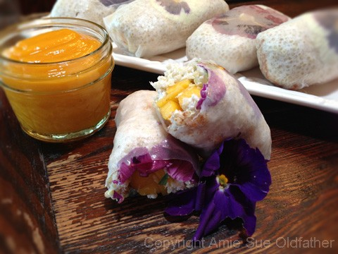
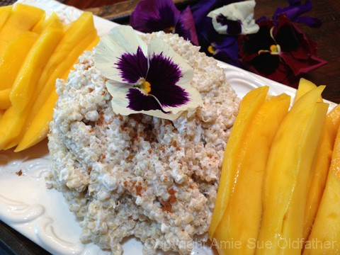
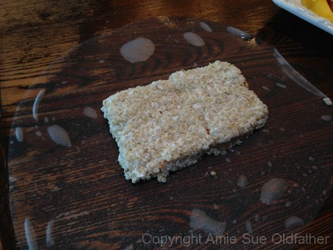
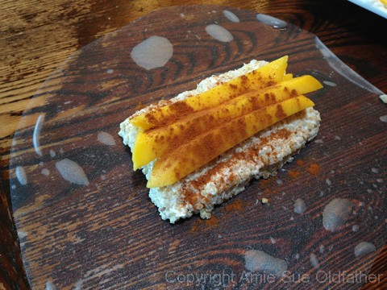
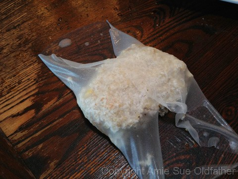
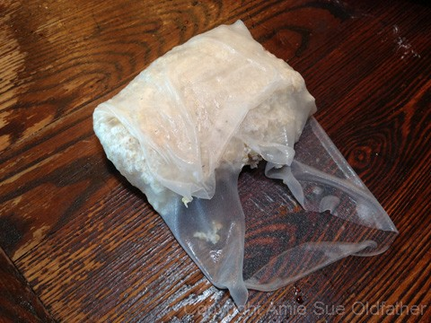

Coconut Mango Spring Rolls with Sticky Quinoa “Rice”
~ raw, vegan, gluten-free, nut-free ~
I have long been a fan of a Thai dish called Sticky Rice and Mango. When I was living in Alaska, there was a tiny, itsy-bitsy Thai restaurant that made some of the most amazing food. It has been years since I have eaten there but that darn sticky rice dish has always stuck in my head ( no pun intended). And for quite a few years I have wanted to make this mostly raw version of it.
Instead of rice, I used quinoa which you can either cook or sprout. For “Sticky” part I added coconut milk to it along with a little sweetener. It would be preferred to use fresh Young Thai Coconuts, but I realize that for some of you, it can be a great challenge finding them. I have been in that position myself so as an alternative I listed a canned version that you can use.
I did my best at capturing step by step photos. A few didn’t come out so well, but I hope there are enough to help you. I used rice paper which isn’t a raw product. You can always make raw coconut wraps if you want the dish to remain completely raw. I have actually had quite a bit of fun making these, but I can see that I still need more experience in the wrapping end of things.
The flowers that I used in this dish are edible ones. Be careful in selecting your flowers. Make sure that they are edible and free of pesticides. These rolls were actually very easy to make, so I encourage you to give them a try. What a gorgeous dessert to surprise your loved ones with.
Ingredients:
yields 6
Coconut quinoa:
- 1 cup uncooked quinoa (see below for cooked or raw versions)
- 14 oz raw coconut milk or canned (BPA free)
- 1/2 cup shredded coconut
- 1/4 tsp liquid stevia
- 1/4 tsp Himalayan pink salt
Filling:
- 1 mango, sliced into strips
- 2 cups of coconut quinoa
- Edible flowers
Dipping Sauce: yields 1 cup
- 1 cup diced mango
- 1/4 cup raw coconut milk or canned (BPA free)
- 1 Tbsp maple syrup
- 2 tsp lemon juice
Preparation:
Quinoa:
- Cook or Sprout quinoa:
- Cook ~ Rinse quinoa till water runs clear. Combine 1 cup quinoa and 2 cups of water in a medium-sized saucepan. Bring to a boil over high heat. Reduce heat to medium-low; cover and simmer 15 minutes or until most of the liquid is absorbed. Turn off heat and let stand covered for 5 minutes.
- Sprout ~ to make approx. 4 cups finished product, put 2 1/2 cups of quinoa in a large bowl or jar. Add 2-3 times as much cool (60-70 degree) water. Mix quinoa well to assure even water contact throughout. Soak for 20-30 minutes. Then drain off the soak water, rinse well and drain. Place a mesh lid on the jar and set it anywhere out of direct sunlight and at room temperature (70° is optimal). Rinse and Drain again every 8-12 hours until tails are formed. Now it is ready to use.
- After cooking or sprouting the quinoa, add the coconut milk, shredded coconut, stevia, and salt. Mix well and set aside.
Filling:
- For optimum flavor, use a ripe mango. Peel the outer skin off and cut the flesh off of the seed, in slabs. Then cut into matchstick slices. Set aside.
- Have the coconut quinoa ready in a bowl.
- Edible flowers are optional, but they sure do make a gorgeous presentation. Be sure that the flowers you use are indeed edible and pesticide-free.
Dipping Sauce:
- Place the mango, coconut milk, sweetener, and lemon juice in the blender and blend until smooth and creamy. Pour into a bowl for serving.
- The excess sauce should last 3-5 days in the fridge.
Assembly:
- Rice paper – Soak the rice paper for 10-15 seconds (you don’t want it too soft when taking it out of the water but pliable enough to roll.) Place rice paper on a cutting board and create a layer of edible flower (the good side of the flower facing down, so it shows through the rice paper) coconut rice, strips of mango, a dash of cinnamon if you want, and another layer of coconut rice.
- Fold in the sides, then the bottom, and then roll, tucking all the ingredients in. Rice paper can get sticky and tear easily, so be gentle and work quickly.
- Store in an airtight container in the fridge. These should last up to 3 days in the fridge. Serve chilled with dipping sauce.






© AmieSue.com